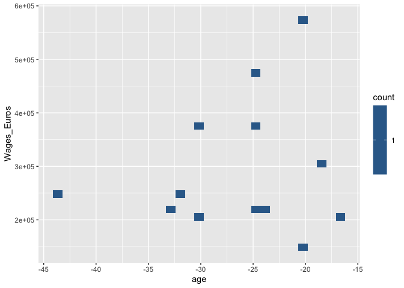
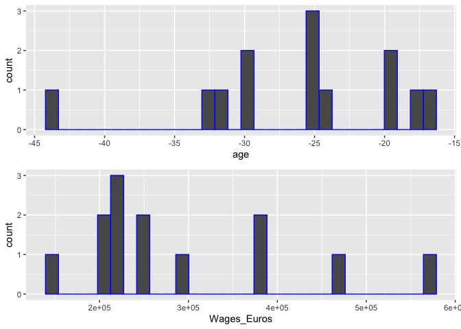
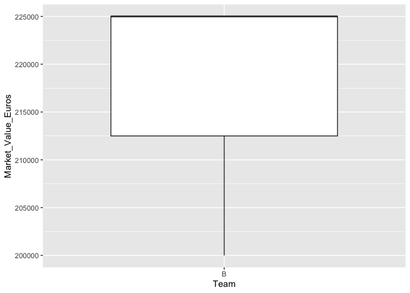

socceranalysisR is a powerful R package designed to make it easy to analyze and understand soccer statistics. With its set of functions, you can quickly obtain summary statistics for a particular team, identify outliers based on market value, rank players by goals per game and display different plots. The package is built in a way that allows user to easily customize the functions to their own interests, giving them the flexibility to analyze the data in a way that is most meaningful to them. Whether you’re a coach, a sports journalist or an analyst, socceranalysisR will help you unlock the insights hidden in your soccer data and make more informed decisions.
Functions
soc_find_team_stat: provides a quick and easy way to understand the descriptive statistics of a team.soc_rankingplayers: Ranks players based on specific attributessoc_get_outliers: Identifes outliers using statistical methods (interquartile range or standard deviations)soc_viz_stats: Generates meaningful visualizations to help users understand and interpret the numerical data (scatter plots or histograms)
R ecosystem
socceranalysisR can be used in conjunction with other popular R packages such as dplyr and ML_for_Hackers to perform more advanced data analysis and machine learning tasks. For example, users can use dplyr to manipulate and clean their soccer data, and then use this package to perform specific soccer-related analysis on the cleaned data. Additionally, socceranalysisR can be used in conjunction with ML_for_Hackers for machine learning tasks on soccer data. They are designed to be a higher-level, more user-friendly and declarative interface based on ggplot2 for performing specific soccer-related analysis and visualization tasks. Users can perform similar visualization using shiny. Overall, socceranalysisR is a valuable addition to the R ecosystem as it provides a specialized tool for analyzing and understanding soccer data without the need for writing complex code, this can be especially useful for users who may not have extensive experience with data analysis.
Installation
You can install the development version of socceranalysisR from GitHub with:
# install.packages("devtools")
devtools::install_github("UBC-MDS/socceranalysisR")Use this link to download the dataset: https://github.com/UBC-MDS/socceranalysis_python/blob/main/soccer_data.xlsx
Example
This is a basic example which shows you how to solve a common problem:
library(socceranalysisR)
# Visualization
## toy data
small_data <- data.frame(age = - c(18, 20, 20, 25, 25, 24, 25, 30, 33, 32, 44, 30, 17),
Wages_Euros = c(300000, 575000, 150000, 475000,375000, 225000, 225000, 200000, 225000, 250000, 250000, 375000, 200000))
## scatter plots
soc_viz_stats('age', 'Wages_Euros', T , small_data)
#> Warning: `label_number_si()` was deprecated in scales 1.2.0.
#> ℹ Please use the `scale_cut` argument of `label_number()` instead.
#> ℹ The deprecated feature was likely used in the socceranalysisR package.
#> Please report the issue to the authors.
## histograms
soc_viz_stats('age', 'Wages_Euros', FALSE , small_data)
#> `stat_bin()` using `bins = 30`. Pick better value with `binwidth`.
#> `stat_bin()` using `bins = 30`. Pick better value with `binwidth`.
## getting outliers
soc_get_outliers(small_data,Wages_Euros,"SD",2)
#> age Wages_Euros
#> 1 -20 575000
## toy data set for ranking
my_data <- data.frame (Name = c("Flora", "Mary", "Sarah", "Ester", "Sophie", "Maria"),
second_column = c(1, 4, 3, 5, 1, 6),
third_column = c(7, 30, 12, 17, 34,8))
## ranking players by their names based on attributes
rankingplayers(my_data, "second_column")
#> Name second_column
#> 1 Maria 6
#> 2 Ester 5
#> 3 Mary 4
#> 4 Sarah 3
#> 5 Flora 1
#> 6 Sophie 1
## toy dataset to test soc_find_team_stat
small_df <- data.frame(Team= c("A", "B", "B", "B", "C", "C") ,
Market_Value_Euros = c(375000, 225000, 225000, 200000, 225000, 250000),
age = c(18, 20, 20, 25, 25, 24))
## a team's descriptive statistics table and box-plot of selected feature
soc_find_team_stat(small_df, "B", Market_Value_Euros)
#> [[1]]
#> Team Market_Value_Euros age
#> Length:3 Min. :200000 Min. :20.00
#> Class :character 1st Qu.:212500 1st Qu.:20.00
#> Mode :character Median :225000 Median :20.00
#> Mean :216667 Mean :21.67
#> 3rd Qu.:225000 3rd Qu.:22.50
#> Max. :225000 Max. :25.00
#>
#> [[2]]
Contributors
| Core contributor | Github.com username |
|---|---|
| Flora Ouedraogo | @florawendy19 |
| Gaoxiang Wang | @louiewang820 |
| Manvir Kohli | @manvirsingh96 |
| Vincent Ho | @vincentho32 |